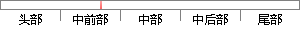

在数据发布领域，学者提出了多种隐私保护模型，主要包括：t-closeness、I-多样性、k-匿名模型等。
片段位置图

相似结果|
相似片段 1：为了保护当事人的隐私利益，数据挖掘领域前辈先后提出了 K-匿名模型和 L-多样性模型，研究表明，K-匿名虽然避免了链接攻击，对同质性攻击却无能为力；L-多样性是解决了 K-匿名存在的问题，但是其自身
相似片段 2：。(3)有些基于 K-匿名模型的改进模型都是针对数值型的数据，而对于分类型的数据无法进行很好地应用。针对以上问题，本章主要研究了数据发布中多维敏感属性的隐私保护问题，提出了一种面向多敏感属性的个性化 K匿名改进算法。
相似片段 3：攻击者不能正确链接记录与个人，但他能以 100%的概率得到被攻击者的敏感值。在 k-匿名的基础上很多学者纷纷提出了自己的隐私保护模型。它们中有代表性的是? ? 多样性[28]和 t-closeness
相似片段 4：如何在数据共享的同时，实现有效合理的隐私保护方法[2]就显得尤为重要。早在20世纪80年代初，文献[3]首次提出了匿名化的概念，并指出这种技术手段可应用于隐私信息的保护。文献[4]提出K-匿名模型
|
※ 片段修改建议 ※
近似词参考：- 发布：公布
- 领域：范畴
- 保护：庇护 护卫 回护 珍爱 掩护 维护
- 模型：模子
- 主要：首要 重要
- 包括：包罗 包孕 包含 囊括
- 模型：模子
系统自动生成语句：在数据公布范畴，学者提出了多种隐私庇护模子，首要包罗：t-closeness、I-多样性、k-匿名模子等。
注：本片段修改建议为系统自动生成，仅供参考。